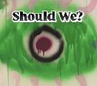

Studied
Rhode Island School of Design 2021-2025
Cooper Union 2019
Residencies
Hof Schluensee, Germany - June-August 2025
Exhibitied
“A Lover’s Discourse” - Parent Company (New York, NY), March 2026
“Microdosing Heaven” - Bahra Place Mall (Providence, RI), March 2026
"My Future Wife" - Mimi's Lounge (Providence, RI), February 2026
"Iris" (Online curated platform), Winter 2026
“Anarchestra Painting Show” - Anarchestra (Providence, RI), December 2025
“Recreation and Play” - Fargnoli Artbox (Providence, RI) November 2025
“Tarot Show” - fullerspeedshop (Providence, RI) October 2025
“Circumstantial Limit” - Schanze 8 Gallery (Hamburg, Germany) August 2025
“Musee Legitime” - Musee Legitime (Amsterdam, Netherlands) June 2025
“8 Team Single Elimination” - Memorial Hall (Providence, RI) April 2025
“No, Painting Baby” - Woods Gerry Gallery (Providence, RI) April 2025
“Architectonics” - Small Format Cafe (Providence, RI) March 2025
“Smoke” - Frieze London (London, England) Assisted artist Yeni Mao Created ceramic pieces for hull and echo piece October 2024
“Happenstance” - Horse Room Gallery (Worcester, MA) February 2024
“Happenstance” - Atlantic Mills (Providence, RI) January 2024
“Happenstance” - 25 Manton Avenue (Providence, RI) November 2024
“Landscape As” - Memorial Hall (Providence, RI) Fall 2024
“Drinking From a Poison Chalice” - Memorial Hall (Providence, RI) Fall 2024
"Spring Mix" - Renwick FAS Viewing Room (Tribeca, NY) 15 Photographs Spring 2024
“Intimate Oppositions” - Memorial Hall (Providence, RI) Spring 2024
“Senior Show” - Memorial Hall (Providence, RI) Spring 2024
"Chipwitch" - Curator, Memorial Hall (Providence, RI) Collaborative Works Winter 2024
"Major Survey Show" - Gelman Gallery (Providence, RI) Winter 2023
"End of the Year" - Hillel Brown/RISD (Providence, RI) 2 Pieces Spring/Summer/Fall 2023
“Give and Take” - RISD Memorial Hall Spring 2023
"Dreamhaus" - Carr Haus (Providence, RI) Spring 2023
“Painting A Day” - RISD Memorial Hall (Providence, RI) Fall 2022
“Soap, Who Cares?” - RISD Memorial Hall (Providence, RI) Winter 2022
"EFS Drawing Exhibition" - RISD Waterman Building (Providence, RI) 5 drawings amongst a small selected group of students’ work Winter 2022
"Admissions Exhibition" - RISD Admissions Building (Providence, RI) Wire sculpture displayed prominently for prospective students/families Fall 2021
"Gutter" Sculpture - Art Basel (Miami, Florida) Assisted artist Rebecca Manson Created 1,000+ clay leaves 2021
Founder of Should We? Gallery
